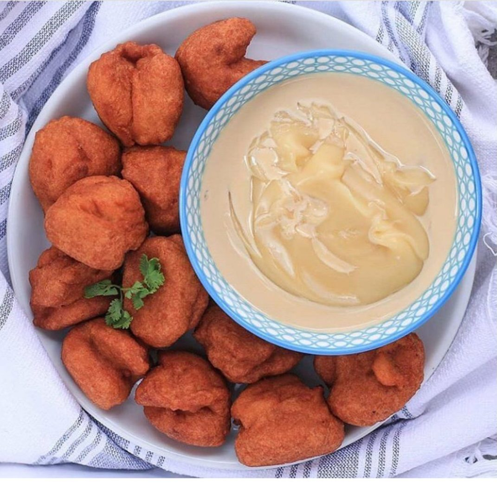

Pap and Akara

Pap and Akara with the saturday vibes
This is a food that is mostly eaten in Nigeria saturday. Very light and
yet very nutritious food
Ingredients
Akara;
- Beans
- Fresh pepper
- Onions
- salt (to tatse)
- Water
Pap
- Ogi (corn extract)
- Water
- Honey
- Milk
Steps
-
Soak and wash peel off beans when soft, put in a blender with onions and
pepper and blend till you get an almost smooth paste
-
When done, pour into a bowl, add chopped onions and little amount of
chopped fresh pepper and add salt to desired taste and stir very well
-
Pour vegetable oil in a pan and put on medium heat, when hot reduce to
low heat and scoop spoon sized balls of the beans paste into the oil
then deep fry both sides till golden brown colored Akarais gotten then
remove and keep in a container.
-
For the pap, boil water, then put ogi in a plate in desired amount and
mix with small water till it forms a paste, when the water boils 100°
pour the water into your mixture till it is thicken and add honey and
milk.
Back to Home